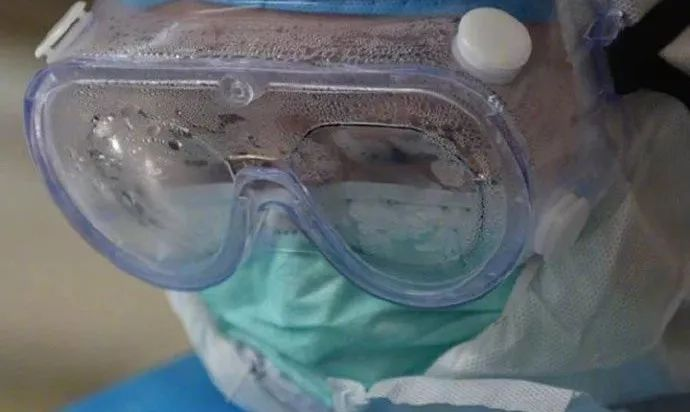

“我们住在一个家，却无法一起见面”
原文链接 备份链接 看到“7例肺炎”的新闻后，小熊赶回了武汉。但妈妈还是病倒了。目前居家隔离的妈妈病情有所好转，可小熊还是一刻不敢放松。 文 | 吴美芬 1月1日，家住武汉的小熊在贵阳出差。这天他第一次听说了“新型肺炎”，新闻里说武汉有7 …

蔡毅医生是武汉市中心医院的疼痛科主任，主攻微创治疗颈椎腰肩痛，从1月28日开始，他主动申请到抗疫一线，成为一名临时的「抗疫医生」。
他管理的是武汉市中心医院的发热二区病房，在这里，不到10天的时间里，他经历了患者的离世、同事的被感染和自己作为一名医生职业观的重塑。
我们注意到他是因为他的一条朋友圈，在那条朋友圈里，他写下了自己科室的护士感染新型冠状病毒肺炎后的经历。故事不长，他说自己不到20分钟就写完了。但他的这段文字被截图下来，在网络上疯传。
2月3日，蔡毅医生接受了《人物》的采访。这位外科医生讲的多是实在话，采访中时不时还伴有笑声，他说，自己的个性就是这样，比较「匪」，他希望在疫情之中，医护人员传递的不止有悲伤。
他希望通过这次采访传递出去的声音是：接下来的两周非常关键，大家务必做好居家隔离，不要对不起医护人员的牺牲；希望有人能捐献一些呼吸机到武汉，救治更多重症患者。
以下是他的讲述——
文｜罗芊
编辑｜金石
1
我们医院现在不存在什么呼吸科的医生，全院都是呼吸科的医生。
我是从1月28号开始到一线的。内科医生不够，外科医生经过培训上岗支援一线，培训就是把这个病种增强了解，在用药上做一些培训，至于抢救这些，我们外科什么都见过，抢救流程我们都十分熟悉。当时，医院基本所有的外科医生都报名了，我有幸第一个报名，就第一个上去了，我也搞不清楚今天几号，连续工作多久也不记得，就这么过。
其实进一线之前，我真的没有发现有这么多的患者，进入到一线我才知道我们内科医生有多么辛苦。头天6点钟开病区，9点钟收病人，第一天就收了19个，第二天病区就满了，现在我们科室收治了33位住院患者。
我的原计划是带5个男医生上一线，女生做第二梯队，后来发现不行，为什么？首先病人数量超过了我们的预期，并且有些患者危重症程度超过了我的预期，第三就是防护服非常笨重，防护眼镜还经常起雾，人站在几米之外就看不清了，说话也听不清，要扯着嗓子喊，工作效率明显降低。
发现这个问题之后，我把另一个院区的疼痛科门诊关掉了，科室的全部年轻医生都上一线了。我们疼痛科有12个医生，只有一个48岁的医生我让他留在家里，年纪大的感染了预后不好，其他的医生全部过来了，科里的护士也全部来了，这样才能把每个人工作时间相对缩短，这也是没有办法的办法。
前两天，我们科一位护士感染了。我接起她的电话，先听见哭声，心里就咯噔一下。她一感染，最难受的是什么？就是医院都知道了，同事们再见到她的时候就要避开她，如果我们不避开，就容易被感染。你想一想，昨天我们还在一起上班，今天被感染了，别的同事还绕着我走，这多难受。
其实我也知道自己不应该接近她，但是同事还是有情感，这就是「上头」，那没有办法，我们看到自己的同事这个样子了，谁把她送回去呢？谁安慰她呢？
我加了层口罩，问她回家隔离还是住院，她的情绪也慢慢稳定下来，说家里有父母，也不想住院，想在外面租房子隔离。我说好，陪她去拿口服药，去找住的地方。她很快就从我们医疗职工集中居住的如家酒店撤出来了，她去整理东西的时候，我告诉她我也有点怕，所以去洗个热水澡杀杀病毒，然后再开车送她，但通知医院去消毒她的住所，我是背着她的。
路上，她还是决定给妈妈打电话通知情况，她父母疯了一样要往这边赶，她哭着坚持不让父母过来。最后我们到她家楼下取东西，父母和她男朋友远远地见她一下，说几句鼓励的话，她妈妈已经哭得不行了，我还要打断他们，「身份证快点拿来，你们走！」这个护士也很冷静，嘱咐她男朋友快点带她父母去医院做检查，排查。
看到她感染了，另一个生病的护士怕人手不够，自己就把长头发剪掉，要上一线。我看她身体不舒服，想让她休息两天的，但是她一看到同事感染了，就跟我说，「倒掉了一个我就上，今天就上班」。其他地方我不知道，我们科室到目前为止，没有哪个说我现在病倒了，我现在不舒服，要退下的。
相反我们医疗人员和护理人员，特别是护士，很多老公拉着不让来，爸妈拉着不让来，都没用，她们把家里的电话掐断，主动报名，直接上火线，谁去鼓动她们，没有人鼓动她们，都是年纪轻轻的小姑娘。而且在一线，很多护士工作的时间要比医生长，这让我觉得女人的抗压能力比男人还强。
医护人员在群中主动报名 图源武汉中心医院微博
2
后来，那个感染的护士她父母和男友去做了排查，结果很不好，父亲也被感染了，片子比她还严重。
和17年前的SARS相比，这次的病毒传播性比较强，传播比较隐蔽，而且比较快，在潜伏期就可以传染。我们医院有些员工没有任何的症状，排查出来，显示已经感染了。但和SARS相比，它的毒性比较弱，年纪大的患者、一些体质比较弱、有基础疾病的患者，危险性会比较大，但一般年轻的患者预后都还好。
而且它的治疗手段也和SARS不太一样。SARS起病比较急促，早期可能会用大剂量的激素，500到1000毫克的激素，但这次，我们大多推注的剂量才40到80毫克，1000除以40，25倍的剂量区别，很大的差别。所以很多人担心的治愈后遗症，比如股骨头坏死这些使用激素的后遗症，这次来讲的话，发生的几率要小很多，所以说大家可以放松点儿。
面对疫情，最了解这个疾病的是医护人员，我们都知道自己有可能会感染，但我们相信自己年轻力壮，即使感染了，不会有太多的并发症，甚至居家隔离就有很好的效果，我们有这种底气，外科医生身体都不错的，我们已经想到了如果感染之后会是什么样子。
但是当我们真正知道被感染的那一霎那，那个情绪波动，作为「人」来讲的话，是不可能规避的，尤其是自己的家人也被感染了，那种内疚真的难以形容。
我们每周都会集体做一次CT排查，你玩过那个玩具吗？按鳄鱼嘴巴里牙齿的那个玩具，那个玩具就和我们拍CT一样的感觉，按着按着，不知道谁是中标的那一个。你可能什么症状都没有，一做CT，发现自己被感染了，我们就是这个心情。我们科室这个被感染的护士做了三次CT，前两次都没有，这次有了，你说它能够预测吗？预测不了。
每次大家都会相互鼓励，科里的年轻医生说，「老大你先上」，我一般也会第一个上去。之前有两天，我觉得很累很累，眼睛也不舒服，我怕万一有事，晚上就自己一个人去拍CT，我出门发动车子，脚踩在油门上，腿都有一点发软，因为我觉得我所有的症状都符合，而且我跟这些患者近距离接触了，最后拍出来没问题，我才放心。所以每次拍CT，我们都会一起拍CT，因为一个人去拍真的很需要勇气，万一查到自己是中标的那一个，特别需要同事安慰。
某种程度上，这种「怕」就是一种本能。举个蛮简单的例子，假如说你现在有胆囊炎需要开刀你慌不慌，把胆囊切掉，也不会死，但是我现在告诉你马上开刀了你慌不慌？这个疾病我们目前整个治疗才几周？谁能够保证以后有没有什么问题？我们都是年纪轻轻的人，肺上破坏了一道，痊愈了以后有没有影响，你也会担心是不是？而且还是有年轻的患者拜拜的是吧？要是运气不好，我正好是那百分之几呢？所以说发生在自己身上还是吓一跳，你明知道这个病预后还可以，但得了病总是不舒服的。
幸好我这个人还是比较「匪」，我是武汉人，我们武汉人就是「匪」的。我们同事每天在防护服后面写名字，我从不写加油，经常给他们写，「毒王1号」，「毒王2号」。我的个性就是这样的，我是一个外科医生，做手术经常会碰到各种问题，所以我们要有很好的抗压能力，要保持理性乐观。
这些天，很多同学安慰我、鼓励我，给我送物资，同事也总说，「老大你不能倒」，我说不要紧，还开玩笑，哪天我感染了被隔离了，我就有更多的时间发朋友圈了，是吧？
这个被感染的护士最后还是决定来住院，和她的爸爸一起来，住在一间病房，我不会过多鼓励她，她知道最真实的情况，也知道最真实的预后，她心里过了那个不舒服的坎就好了。

图源武汉中心医院微博
3
之前在疼痛科，开科五年，我主要是做微创技术治疗颈椎腰肩痛，基本不怎么会开死亡记录，怎么写我都不会，今天早上，我收治的一个重症患者没抢救过来去世了，所有东西我都要从头学，真的是这样的。
这个患者是自己开着车过来看病的，60多岁，是个高级教授，现在规定是，新型冠状病毒肺炎逝者家属是不能和遗体见面的，所有遗体都由殡仪馆统一处理。
这位患者查核酸是疑似阳性，从他的影像学片子看，基本上是确诊了，但他的死亡证明上，我们也只能写疑似新型冠状病毒肺炎，除非查出来确定是阳性，才能写确诊。这两天大家都在谈诊断标准，从临床来看，核酸这个检查老实说很多医生也不认可，因为很多病例我们从影像上进行检查、比如说通过CT，肺部的改变我们可能看得更清楚一点点。核酸检查采集样本，如果你采得不够深，很有可能会显示阴性，假阴性，它需要反复地测，所以我给所有患者交代的都是不要太过于关注核酸检测的结果。
这位患者离世了，家属要回去，车也不好叫。患者的儿子到美国去了，来送他的是两个老人，一个哭得不成人形，是他老伴，另外是他一个弟弟，两个都是老人。他们要把患者的东西带回去，还要办理各种手续，要签字、拍照，死亡证明要上传，两个老人怎么弄呢？只有我们帮他。
那两个老人跟我说，他们自己想办法回去，我说你们想什么办法。难道这个时候去打一个电话，找一个代驾吗？假如说找代驾，不告诉别人这是感染者的车，好吗？其次，现在武汉市找得到代驾吗？我就说，「我帮你开回去算了，你们等我吧」。
我拿着酒精下去给车消毒，打开车门没多会儿，车里的收音机开始放广播，把我吓得不行。这位患者的车停在负二楼一个角落里面，阴森森的，那台车的型号我不熟悉，收音机一下开起来，我连关都不知道怎么关。很真实吧，这就是我身边真实的故事。
我原来是搞麻醉的，我见过很多生生死死，但很多生生死死家属都可以在旁边陪伴，但是感染患者的生生死死，家属是没有办法陪伴的，最后给予他安慰的就只有我们，有很多患者家属都嫌弃他们，有的患者送来，家属就直接走了，甚至没有家属送来，有些患者也不想感染家属，自己一个人住院。
最后这位患者的抢救过程我一直在里面，早上搞了三个小时，我就在那里，能尽力的给他尽力，患者的血氧从70到60到50到40，到抢救快结束的时候，我让年轻的医生都出去了，因为有很大的感染风险。我送他走到最后，没有办法再救治了，没有办法再往下走了，我就在里面，坐着陪他，就是这种感觉。
他没有交代遗言，只是一直跟我说，不要放弃我。他氧气感觉跟不上来的时候，我帮他把氧气罩搭上去，其实按道理说，我搭这个有很大传染性，但我知道，患者在临走的时候需要有人安抚，也许我们什么都做不了，但是我们还是要安抚他，要给他希望，我鼓励他，我说，会好的，会好的，让他一直走到最后。
这些情绪太负面了，你看到一个人走到最后无能为力，只有看着他走，而且他家属没有办法陪伴，你知道那种感觉吗？
但你们听了别太往心里去，其实我心理状态蛮好的，没办法，有些东西我改变不了，有些病我救治不了，那我就认了，我还要救治后面的患者，我还有30多个患者，今天又进了2个，我还要继续救治，不能说我现在情绪不好，我就不干了，那这些患者怎么办，我现在这些病人怎么办？
也有人说一线的医护人员需不需要心理咨询，但现在，我们哪有时间做心理咨询？心理医生都进不了我们医院，我们自己调节或者互相调节一下吧，开个玩笑，乐观一点，还能怎么办？真的没办法。以后吧，等疫情过去了，一线的一些医生、护士还是要做一些心理辅导，但这都是以后的事情了。

医护人员的手 图源武汉中心医院微博
4
这次疫情，我越来越能感受到患者对医生的依赖，我觉得我们还是挺被人需要的。
我以前并不想当医生，高考的时候，我的分数能考上清华大学，但是我爸爸希望我学医，我就报考了华中科技大学同济医学院。毕业后，刚开始我干麻醉，手术做得很漂亮，但大家也关注不到麻醉，当然很正常，后来我做疼痛外科，在很多中国人的观念中，疼痛可以扛过去，不需要治，但这一次，很多患者生命受到威胁的时候，这种对医生的需要和认同，甚至超过了对家属的依赖。
这个疾病的特殊性决定了我们和患者的沟通没有那么畅通，毕竟穿着防护服，还戴着防护眼镜，所以说很多跟患者的对接，我们都会通过微信群分组沟通，这是协和医院的杨东教授教给我的方法。我们把每个组的医生和他管理的患者编在一个群里，而我在每个群里。这样的话，即便没有查房的时候，患者有什么想知道的，我们有什么想告诉患者的，都可以第一时间沟通。
这种方法也是我们医患之间增进了解的方式，对有些患者来说也是一种鼓励。因为有些患者的情绪会比较低落，别人鼓励他，家属鼓励他，他都不太信，医生毕竟代表着专业，如果我们鼓励他的话，他可能会更信任一点点。
患者有时候也很令我感动。有些人的很多症状，都是我们问出来的，我们没去查房的时候，他们即使喘息，也都忍着不说，不去按呼叫铃，因为怕我们累，怕麻烦我们，也怕传染我们。
我有个病人因为政策要转到火神山医院治疗，一个50多岁的男性，他跟我们告别的时候直接哭起来了，他说自己非常舍不得走，我们都觉得很难受。平时患者最多给我送锦旗什么的，从来没有这种哭起来的，这些天，我们医护人员跟患者就像战友一样，真的叫心连心，平时很少有这种感觉。
这几天很多人因为我发的朋友圈来采访我，我想说，我有钱，我会开刀，我有技术，不需要做什么网红。我发朋友圈就是想提醒广大的市民，刚开始一下来了这么多的病人，我心都是慌的，我不知道何时是一个头，不知道会不会越治越多，但后来发现一旦隔离之后，武汉市街道上没什么人了，我感觉到了一点控制的趋势，所以我就是想呼吁一下，接下来的两周，大家务必做好居家隔离，不要辜负医护人员的牺牲。
物资方面，我们是武汉市最大的三甲医院，还在华南海鲜市场旁边，我们物资目前看上去是够的，具体差什么呢？差的是合乎规格的物资，比如说防护服、口罩，我们有，真正达到标准的，比较难。但有些比我们小的兄弟医院，连基础物资都缺乏。
目前面对这个疾病，我们暂时也没有太多办法，第一对症治疗，其次增加免疫力，再就是控制并发症，就没有了，重症的患者，到最后要么是心衰，要么是呼衰，现在大多数患者是呼衰。所以一线医院目前最需要的还有呼吸机。在这里呼呼大家，有钱的可以捐一点不错的呼吸机，有些2万左右的无创呼吸机就很好，这种呼吸机如果再多一点点，在这个期间可能会救治更多的重症患者。
最后，我想说的是，大家务必再坚持一下，顶住。等疫情过去，我最想做的事是和同事们去大吃一顿，吃宵夜、喝啤酒，武汉人最喜欢宵夜了，这段时间真的憋死我了。

疫情暴发前的武汉宵夜摊
没看够？
长按二维码关注《人物》微信公号
更多精彩的故事在等着你

原文链接 备份链接 看到“7例肺炎”的新闻后，小熊赶回了武汉。但妈妈还是病倒了。目前居家隔离的妈妈病情有所好转，可小熊还是一刻不敢放松。 文 | 吴美芬 1月1日，家住武汉的小熊在贵阳出差。这天他第一次听说了“新型肺炎”，新闻里说武汉有7 …
原文链接 备份链接 ********** *****现在如果能多一点N95口罩、给我们医院捐赠一些无创呼吸机，就更加好了。***** 身穿防护服的蔡毅。受访者供图 文 | 新京报记者 周小琪 编辑｜陈晓舒 校对 | 杨许丽 ►本文 …
原文链接 备份链接 - 疫 情 之 下 - 直到1月27日，我院发出接受社会捐赠的公告时，我才知晓，远在千里之外的我们，也没有防护物资了。年初一晚上去支援的我，在桌子边看见的防护用具，就是余下的所有物品。 ” 1 2020年1月25日， …
原文链接 备份链接 “我在家族群里说，科室工作群里每天都有很多接诊信息，护士长已经连续工作48小时，还有护士生病了。选择当医生、当护士肯定是有风险，但我会做好防护。我返回岗位继续工作不是为了当英雄，但是不能做逃兵。” 全文2771字，阅读 …
原文链接 备份链接 昨天（1月28日），我的一位朋友在群里筹药，说她武汉的护士朋友可能感染了新型肺炎，但是武汉已经买不到这种药了，请求外地的朋友支援。医护人员患病的消息在群里激起了千层浪。群友纷纷去附近药店打听，最后有人在杭州买了药寄给护 …